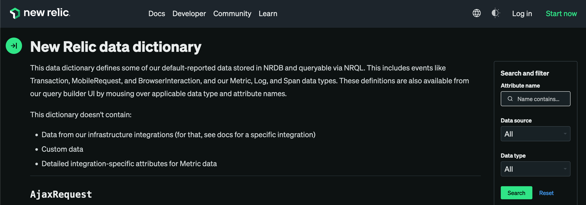
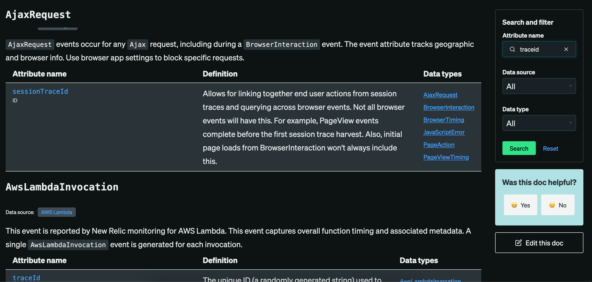
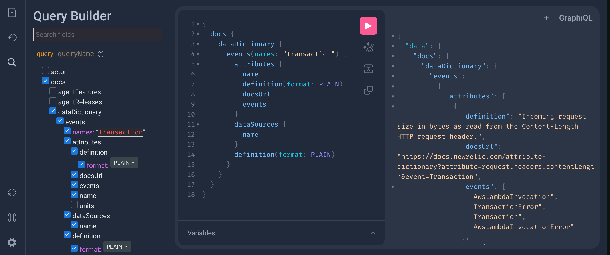

NRQL Bonanza
🎉
Get more out of your data with NRQL!

Carl Chesser
- Sr. Principal Engieer @ Oracle (formerly Cerner)
- 18 years in software development
- Used New Relic ~ 5 years
About this Talk
Exploring NRQL 🔍
- Assume you know about the New Relic Query Langauge (NRQL)
- Short exploration around learning more about your data
- Includes some short exploration of NerdGraph (GraphQL)
Data Dictionary
https://docs.newrelic.com/attribute-dictionary/

Search for attributes across entities

Data Dictionary in NerdGraph!
{
docs {
dataDictionary {
events(names: "Transaction") {
attributes {
name
definition(format: PLAIN)
docsUrl
events
units {
label
}
}
dataSources {
name
}
definition(format: PLAIN)
}
}
}
}
Helpful if you are wanting to extract the dictionary data into other sources for consumption…

What about entities that describe usage of New Relic?
🤷♂️
Usage
Use NRQL to understand more about your data
NrConsumptionNrDailyUsageonce-a-day tracking of usage by product linebytecountestimatefunction on entities
Usage
NrConsumption to look usage metrics and consuming account name.
Helpful if you have a multiple account organization.
SELECT sum(GigabytesIngested)
FROM NrConsumption
WHERE productLine = 'DataPlatform'
SINCE 3 days ago
FACET usageMetric, consumingAccountName
TIMESERIES 1 hour
Usage
NrConsumption to compare metrics ingestion over 4 weeks.
SELECT sum(GigabytesIngested) AS avgGbIngestTimeseries
FROM NrConsumption
WHERE productLine = 'DataPlatform'
AND usageMetric = 'MetricsBytes'
SINCE 4 weeks ago COMPARE WITH 4 weeks ago TIMESERIES 1 day
Usage
NrDailyUsage to look at counts of application (what for spikes of growth)
SELECT uniqueCount(apmAppName)
FROM NrDailyUsage
FACET apmAppName
SINCE 30 days ago TIMESERIES 1 day
Usage
NrDailyUsage to look at counts of application, by categorizing on an application name prefix.
SELECT uniqueCount(apmAppName)
FROM NrDailyUsage
-- Facet by application name prefix if you have (dash)
FACET capture(apmAppName, r'(?P<appName>.*)\-.*')
SINCE 30 days ago TIMESERIES 1 day
Usage Estimation
bytecountestimate, as the name implies, is an estimate.
Evaluate metrics by source and metric name:
SELECT bytecountestimate()/10e8
AS 'GB Estimate'
FROM Metric
SINCE 4 weeks ago
FACET newrelic.source,
metricName
LIMIT 2000
Usage Estimation
Evaluate the rate of APM transaction and distributed trace data by application and event type (table) in a timeseries to look at spikes.
SELECT rate(bytecountestimate()/10e8, 1 minute)
AS 'GB per minute'
FROM Transaction,
TransactionError,
TransactionTrace,
Span
-- eventType() function allows you facet by entities
FACET appName, eventType()
TIMESERIES 1 day
SINCE 3 days ago
LIMIT 10
Usage
Break down metrics by prefix name
SELECT count(newrelic.timeslice.value)
FROM Metric
WHERE appName LIKE 'foo%'
-- Ignore internal NR supportability metrics
AND prefix != 'Supportability'
WITH METRIC_FORMAT '{prefix}/{metric_name}'
SINCE 1 hour ago LIMIT MAX FACET prefix TIMESERIES
Usage
Focus on metric names based on the prefix identified
SELECT count(newrelic.timeslice.value)
FROM Metric
WHERE appName LIKE 'foo%'
-- Focus in on metric_names with External prefix
AND prefix = 'External'
WITH METRIC_FORMAT '{prefix}/{metric_name}'
SINCE 1 hour ago LIMIT MAX FACET metric_name TIMESERIES
What about entities that are not in the dictionary?
🤷♂️
Discover
Get a listing of all the event types through this NRQL command:
SHOW EVENT TYPES
Discover
Curious about what all columns are on an entity? Use keyset()!
-- Returns a JSON structure all of
-- the attributes for the NrUsage entity
SELECT keyset()
FROM NrUsage
Beyond the Dictionary
Use NRQL to understand more about your data
ApplicationAgentContextfor agent deployment contextNrdbQueryfor what queries are being used
Applications Instrumented
Understand your applications and agents versions that are deployed.
SELECT count(*)
FROM ApplicationAgentContext
-- Replace 'foo' appName qualification
-- for the entity you are searching
where appName LIKE 'foo%'
FACET appName, entity.guid, agent.version
SINCE 1 days ago
Shadow Table
NrdbQuery helps track NRQL usage in your account.
What if I need to inspect what fields people are using?
Ex. deprecating one field for another (7.5.0 agent upgrade)…
SELECT count(*)
FROM NrdbQuery
WHERE query
RLIKE r'.*(\s+|\.)(http.responseCode|response.status|response.statusMessage).*'
AND query NOT LIKE '%NrdbQuery%'
AND query RLIKE r'(?i).*FROM Transaction.*'
FACET user, query
SINCE 90 days AGO LIMIT MAX
Shadow Table
NrdbQuery to help capture metrics being used via NRQL…
SELECT count(*) FROM NrdbQuery
-- Include metric name teams may be using in NRQL
WHERE query RLIKE '.*MemoryPool.*'
FACET user, query SINCE 7 days AGO
Inspect across account with NRQL via GraphQL
🚀
{
actor {
account(id: 123) {
nrql(query: "SELECT count(*) FROM ApplicationAgentContext WHERE agent.language = 'java' AND agent.version RLIKE r'[8-9]\.\d+\.\d+' SINCE 1 WEEK AGO FACET entity.guid, appName LIMIT MAX") {
results
}
}
}
}